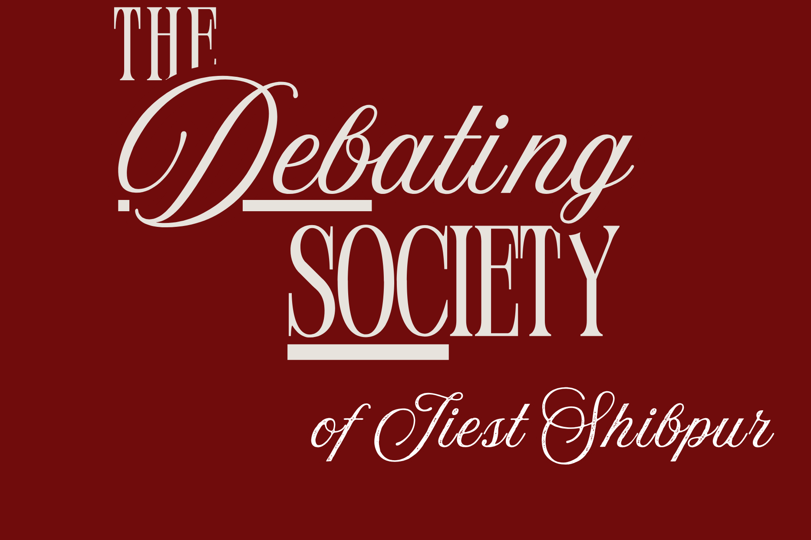

The Debating Society of IIEST, Shibpur, or DebSoc, is a student-led community built around conversation, critical thinking, and public speaking. Since its early years, the society has served as a space where students come together to debate ideas, challenge perspectives, and learn the art of expressing themselves clearly and confidently.
What began as small weekly discussions gradually evolved into one of the institute’s most active platforms for debate and Model United Nations. Over the years, DebSoc has hosted Oxford-style debates, parliamentary formats, public speaking sessions, memorial debates, and MUN conferences, while also representing IIEST at institutions across the country including IIT Kharagpur, IISER Kolkata, Jadavpur University, and IIT Guwahati. The society has consistently participated in national debate and MUN circuits, earning accolades in diplomacy, public speaking, and delegation performance.
But DebSoc has never been defined only by awards. At its core, it remains a place for learning. Many members join with little or no experience in debating or public speaking. Through regular sessions, practice debates, workshops, and peer mentorship, students gradually develop confidence not just in speaking, but in thinking critically and listening carefully.
The society also hosts several flagship events through the year, including the BECON(Bengal Engineering Conclave of Nations),Paramesh Ranjan Dhar Memorial Debate, Disputation(induction), Voices in Focus and collaborative debate events under Instruo, TechManthan. Each event reflects the same spirit that has carried the society forward for years: open discussion, intellectual curiosity, and meaningful dissent.
Even during the pandemic, DebSoc continued conducting online debates, training sessions, and inductions, proving that the community extended far beyond physical rooms or auditoriums. That continuity remains one of its defining strengths.
Today, DebSoc is home to students from different disciplines and backgrounds who share a common interest in ideas, dialogue, and expression. Whether someone joins to compete nationally, improve communication skills, explore international relations, or simply become more confident speaking in public, the society offers a space to grow.
Trace our journey through the years, or see the faces and moments behind the society.
If you are reading this as someone considering joining DebSoc, there is something important you should know early: you do not need to arrive here already polished, confident, or impossibly articulate. Despite what competitive debate culture on the internet likes to pretend, nobody walks into a room at eighteen speaking like a diplomat who swallowed three newspapers and a law textbook. Most people begin awkwardly. Most people interrupt too early, forget points halfway through speaking, panic during rebuttals, or discover that “winning arguments” and “communicating clearly” are very different skills. That is normal.
DebSoc has always been built around people learning publicly. Over the years, members have come from every background imaginable: students who loved politics, students terrified of public speaking, people who joined for MUNs, people who stayed for the discussions after sessions ended. Some went on to win competitions. Some simply became more thoughtful, more confident, more capable of expressing themselves in classrooms, interviews, meetings, and life beyond college. Both matter equally.
What survives in a society is rarely just trophies. It is culture. It is whether seniors stay back after sessions to help juniors prepare speeches. Whether people keep showing up after bad performances. Whether disagreements remain respectful. Whether curiosity is encouraged instead of mocked. DebSoc, through all its uneven years and changing batches, has managed to preserve that spirit remarkably well. Which is mildly miraculous by student-organisation standards. Most college groups collapse the moment Google Drive passwords are lost.
You will debate serious topics here and occasionally ridiculous ones. You will probably lose arguments you were convinced you would win. You may discover that listening carefully is harder than speaking loudly. You will also find people willing to help you improve if you are willing to put in the effort consistently.
And that is really the only expectation: show up. Speak. Listen. Learn. Return the next week and do it again.
Because in the end, DebSoc is not defined only by competitions, events, or committee names. It is defined by generations of students choosing, year after year, to think critically, speak honestly, and engage with the world a little more carefully than before.